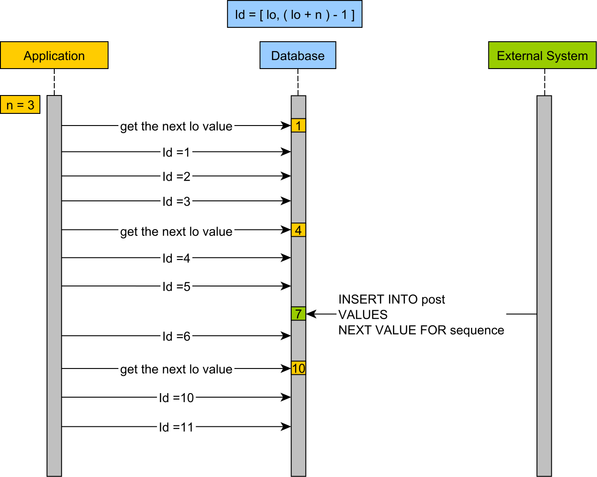

들어가며 Spring JPA를 사용하며 대량으로 insert 시, 1건씩 insert 되기에 성능이 너무 안나온다고 생각을 하고 있었습니다.
다른 사람들이 작성한 블로그를 읽어보면 뭔가 되는듯 한데, 나만 안되는 건가? 라는 생각이 들었고
예제 코드는 아래 github에 있습니다.https://github.com/jaehun2841/spring-jpa-batch-insert-test
Batch Insert? 왜 insert 하나에 안합쳐져? 대부분 Insert 구문은 아래와 같이 사용됩니다
1 insert into test_data (created_at, uuid, id) values ('2020-11-22 19:28:05.79' , 'e8e6255c-bd9b-4310-af8b-72ab1ce31259' , 620000 );
우리는 모두 많은 데이터를 입력할 시, 아래와 방법처럼 insert 구문을 실행하지 않고
1 2 3 4 5 6 7 8 9 10 11 12 13 insert into test_data (created_at, uuid, id) values ('2020-11-22 19:28:05.79' , '6c5fe953-ec38-4b26-b2f7-29a389cb8c03' , 619988 );insert into test_data (created_at, uuid, id) values ('2020-11-22 19:28:05.79' , '1959cb84-1dd5-42cc-95c1-8fd501881f1f' , 619989 );insert into test_data (created_at, uuid, id) values ('2020-11-22 19:28:05.79' , 'daf8073e-78ea-435c-ac36-ac0796c4c283' , 619990 );insert into test_data (created_at, uuid, id) values ('2020-11-22 19:28:05.79' , 'b98761f6-5f0b-448c-8f7f-aeffc22032d6' , 619991 );insert into test_data (created_at, uuid, id) values ('2020-11-22 19:28:05.79' , '9a740e9c-2249-4c05-9349-9118c5825755' , 619992 );insert into test_data (created_at, uuid, id) values ('2020-11-22 19:28:05.79' , 'd1b0e19c-9002-40d9-a43c-ae5e7293a7f4' , 619993 );insert into test_data (created_at, uuid, id) values ('2020-11-22 19:28:05.79' , '5ac02554-a877-4d1e-93b1-3f15bb58261c' , 619994 );insert into test_data (created_at, uuid, id) values ('2020-11-22 19:28:05.79' , '36673f68-3c56-4be6-8e09-3d970d5f361e' , 619995 );insert into test_data (created_at, uuid, id) values ('2020-11-22 19:28:05.79' , '9d64f853-bd04-4ace-ba14-acc072f19729' , 619996 );insert into test_data (created_at, uuid, id) values ('2020-11-22 19:28:05.79' , '37190885-c1e7-4417-b545-f78130854acf' , 619997 );insert into test_data (created_at, uuid, id) values ('2020-11-22 19:28:05.79' , 'fa7dc828-8aeb-45f1-9e80-8843890fd527' , 619998 );insert into test_data (created_at, uuid, id) values ('2020-11-22 19:28:05.79' , '6e860c36-00f5-4349-952c-f7c09dfcc263' , 619999 );insert into test_data (created_at, uuid, id) values ('2020-11-22 19:28:05.79' , 'e8e6255c-bd9b-4310-af8b-72ab1ce31259' , 620000 );
이와 같이 멀티라인 insert가 효율이 더 좋음을 알고 있기에, 이러한 방법을 사용할 것입니다.
1 2 3 4 5 6 7 8 9 10 11 12 13 14 insert into test_data (created_at, uuid, id) values ('2020-11-22 19:28:05.79' , '6c5fe953-ec38-4b26-b2f7-29a389cb8c03' , 619988 ) ,('2020-11-22 19:28:05.79' , '1959cb84-1dd5-42cc-95c1-8fd501881f1f' , 619989 ) ,('2020-11-22 19:28:05.79' , 'daf8073e-78ea-435c-ac36-ac0796c4c283' , 619990 ) ,('2020-11-22 19:28:05.79' , 'b98761f6-5f0b-448c-8f7f-aeffc22032d6' , 619991 ) ,('2020-11-22 19:28:05.79' , '9a740e9c-2249-4c05-9349-9118c5825755' , 619992 ) ,('2020-11-22 19:28:05.79' , 'd1b0e19c-9002-40d9-a43c-ae5e7293a7f4' , 619993 ) ,('2020-11-22 19:28:05.79' , '5ac02554-a877-4d1e-93b1-3f15bb58261c' , 619994 ) ,('2020-11-22 19:28:05.79' , '36673f68-3c56-4be6-8e09-3d970d5f361e' , 619995 ) ,('2020-11-22 19:28:05.79' , '9d64f853-bd04-4ace-ba14-acc072f19729' , 619996 ) ,('2020-11-22 19:28:05.79' , '37190885-c1e7-4417-b545-f78130854acf' , 619997 ) ,('2020-11-22 19:28:05.79' , 'fa7dc828-8aeb-45f1-9e80-8843890fd527' , 619998 ) ,('2020-11-22 19:28:05.79' , '6e860c36-00f5-4349-952c-f7c09dfcc263' , 619999 ) ,('2020-11-22 19:28:05.79' , 'e8e6255c-bd9b-4310-af8b-72ab1ce31259' , 620000 );
처음에 Hibernate에서 제공하는 batch insert가 이와 같은 기능인 줄 착각 하여 이런 기능을 제공하지 않는 줄 알았습니다.
JDBC Batching batch-jdbcbatch 이 글에는 JDBC에서 제공하는 batch 처리 옵션을 알려주고 있습니다.
JDBC offers support for batching together SQL statements that can be represented as a single PreparedStatement. Implementation wise this generally means that drivers will send the batched operation to the server in one call, which can save on network calls to the database. Hibernate can leverage JDBC batching. The following settings control this behavior.
번역기를 통해 번역해보면..
JDBC는 단일 PreparedStatement로 표현 될 수있는 SQL 문을 일괄 처리 할 수 있도록 지원합니다.
다시 한번 의역해보면..
1 2 3 4 5 6 7 8 9 10 11 12 13 insert into test_data (created_at, uuid, id) values ('2020-11-22 19:28:05.79' , '6c5fe953-ec38-4b26-b2f7-29a389cb8c03' , 619988 );insert into test_data (created_at, uuid, id) values ('2020-11-22 19:28:05.79' , '1959cb84-1dd5-42cc-95c1-8fd501881f1f' , 619989 );insert into test_data (created_at, uuid, id) values ('2020-11-22 19:28:05.79' , 'daf8073e-78ea-435c-ac36-ac0796c4c283' , 619990 );insert into test_data (created_at, uuid, id) values ('2020-11-22 19:28:05.79' , 'b98761f6-5f0b-448c-8f7f-aeffc22032d6' , 619991 );insert into test_data (created_at, uuid, id) values ('2020-11-22 19:28:05.79' , '9a740e9c-2249-4c05-9349-9118c5825755' , 619992 );insert into test_data (created_at, uuid, id) values ('2020-11-22 19:28:05.79' , 'd1b0e19c-9002-40d9-a43c-ae5e7293a7f4' , 619993 );insert into test_data (created_at, uuid, id) values ('2020-11-22 19:28:05.79' , '5ac02554-a877-4d1e-93b1-3f15bb58261c' , 619994 );insert into test_data (created_at, uuid, id) values ('2020-11-22 19:28:05.79' , '36673f68-3c56-4be6-8e09-3d970d5f361e' , 619995 );insert into test_data (created_at, uuid, id) values ('2020-11-22 19:28:05.79' , '9d64f853-bd04-4ace-ba14-acc072f19729' , 619996 );insert into test_data (created_at, uuid, id) values ('2020-11-22 19:28:05.79' , '37190885-c1e7-4417-b545-f78130854acf' , 619997 );insert into test_data (created_at, uuid, id) values ('2020-11-22 19:28:05.79' , 'fa7dc828-8aeb-45f1-9e80-8843890fd527' , 619998 );insert into test_data (created_at, uuid, id) values ('2020-11-22 19:28:05.79' , '6e860c36-00f5-4349-952c-f7c09dfcc263' , 619999 );insert into test_data (created_at, uuid, id) values ('2020-11-22 19:28:05.79' , 'e8e6255c-bd9b-4310-af8b-72ab1ce31259' , 620000 );
이 SQL문을 그냥 한번에 실행해 주는 역할 정도만 한다는 의미입니다. (생각했던 multi-row insert가 아닌)
JDBC Options hibernate.jdbc.batch_size 이 옵션은 몇개의 statement 즉, 하나의 sql이 쌓이면 DB서버로 요청할 지 정하는 단위입니다.
1 2 3 4 5 6 7 8 9 10 insert into test_data (created_at, uuid, id) values ('2020-11-22 19:28:05.79' , 'b98761f6-5f0b-448c-8f7f-aeffc22032d6' , 619991 );insert into test_data (created_at, uuid, id) values ('2020-11-22 19:28:05.79' , '9a740e9c-2249-4c05-9349-9118c5825755' , 619992 );insert into test_data (created_at, uuid, id) values ('2020-11-22 19:28:05.79' , 'd1b0e19c-9002-40d9-a43c-ae5e7293a7f4' , 619993 );insert into test_data (created_at, uuid, id) values ('2020-11-22 19:28:05.79' , '5ac02554-a877-4d1e-93b1-3f15bb58261c' , 619994 );insert into test_data (created_at, uuid, id) values ('2020-11-22 19:28:05.79' , '36673f68-3c56-4be6-8e09-3d970d5f361e' , 619995 );insert into test_data (created_at, uuid, id) values ('2020-11-22 19:28:05.79' , '9d64f853-bd04-4ace-ba14-acc072f19729' , 619996 );insert into test_data (created_at, uuid, id) values ('2020-11-22 19:28:05.79' , '37190885-c1e7-4417-b545-f78130854acf' , 619997 );insert into test_data (created_at, uuid, id) values ('2020-11-22 19:28:05.79' , 'fa7dc828-8aeb-45f1-9e80-8843890fd527' , 619998 );insert into test_data (created_at, uuid, id) values ('2020-11-22 19:28:05.79' , '6e860c36-00f5-4349-952c-f7c09dfcc263' , 619999 );insert into test_data (created_at, uuid, id) values ('2020-11-22 19:28:05.79' , 'e8e6255c-bd9b-4310-af8b-72ab1ce31259' , 620000 );
이와 같이 sql이 10개가 내부 큐에 쌓이면 전송하는 방식입니다.
hibernate.order_inserts, hibernate.order_updates 아래와 같은 경우에는 batch insert가 적용되지 않습니다.
1 2 3 4 5 6 7 8 9 10 11 12 13 public void executeInserts () { List<Child> childList = new ArrayList <>(); for ( int i=0 ; i< 10 ; i++ ) { Parent parent = new Parent (...); Child child = new Child (...); child.setParent(parent); childList.add(child); } childRepository.saveAll(childList); }
내부적으로 parent가 insert되고 child가 insert가 되기 때문에 쓰기지연 SQL 저장소에는 이런식으로 구성이 되어 batch insert가 실행되지 않습니다.
1 2 3 4 5 6 7 8 9 10 11 12 13 14 15 16 17 18 19 20 insert into parent (id) values (1 );insert into child(id, parent_id) values (1 , 1 );insert into parent (id) values (2 );insert into child(id, parent_id) values (2 , 2 );insert into parent (id) values (3 );insert into child(id, parent_id) values (3 , 3 );insert into parent (id) values (4 );insert into child(id, parent_id) values (4 , 4 );insert into parent (id) values (5 );insert into child(id, parent_id) values (5 , 5 );insert into parent (id) values (6 );insert into child(id, parent_id) values (6 , 6 );insert into parent (id) values (7 );insert into child(id, parent_id) values (7 , 7 );insert into parent (id) values (8 );insert into child(id, parent_id) values (8 , 8 );insert into parent (id) values (9 );insert into child(id, parent_id) values (9 , 9 );insert into parent (id) values (10 );insert into child(id, parent_id) values (10 , 10 );
하지만 hibernate.order_inserts = true 가 적용되면 각각의 insert 구문이 정렬되어 batch insert가 가능해집니다.
1 2 3 4 5 6 7 8 9 10 11 12 13 14 15 16 17 18 19 20 21 insert into parent (id) values (1 );insert into parent (id) values (2 );insert into parent (id) values (3 );insert into parent (id) values (4 );insert into parent (id) values (5 );insert into parent (id) values (6 );insert into parent (id) values (7 );insert into parent (id) values (8 );insert into parent (id) values (9 );insert into parent (id) values (10 );insert into child(id, parent_id) values (1 , 1 );insert into child(id, parent_id) values (2 , 2 );insert into child(id, parent_id) values (3 , 3 );insert into child(id, parent_id) values (4 , 4 );insert into child(id, parent_id) values (5 , 5 );insert into child(id, parent_id) values (6 , 6 );insert into child(id, parent_id) values (7 , 7 );insert into child(id, parent_id) values (8 , 8 );insert into child(id, parent_id) values (9 , 9 );insert into child(id, parent_id) values (10 , 10 );
rewrite 옵션 정말로 multi-row insert가 지원이 안되나? 하고 찾아보니 jdbc.batch_size 옵션을 사용하면 내부적으로 addBatch() 메서드를 통해 batch로 처리하지만
원하는 multi-row insert를 하기 위해선 jdbcUrl에 아래와 같은 옵션이 추가되어야 합니다.
MySQL : jdbc:mysql://localhost:3306/jpa-test?useSSL=false& rewriteBatchedStatements=true PostgreSQL : jdbc:postgresql://localhost:5432/jpa-test?useSSL=false& rewriteBatchedInserts=true
이 옵션을 추가하면, connector 레벨에서 insert 구문을 재작성(rewrite) 하게 되어 아래와 같은 형태로 SQL이 재작성됩니다.
1 2 3 4 5 6 7 8 9 10 11 12 13 14 insert into test_data (created_at, uuid, id) values ('2020-11-22 19:28:05.79' , '6c5fe953-ec38-4b26-b2f7-29a389cb8c03' , 619988 ) ,('2020-11-22 19:28:05.79' , '1959cb84-1dd5-42cc-95c1-8fd501881f1f' , 619989 ) ,('2020-11-22 19:28:05.79' , 'daf8073e-78ea-435c-ac36-ac0796c4c283' , 619990 ) ,('2020-11-22 19:28:05.79' , 'b98761f6-5f0b-448c-8f7f-aeffc22032d6' , 619991 ) ,('2020-11-22 19:28:05.79' , '9a740e9c-2249-4c05-9349-9118c5825755' , 619992 ) ,('2020-11-22 19:28:05.79' , 'd1b0e19c-9002-40d9-a43c-ae5e7293a7f4' , 619993 ) ,('2020-11-22 19:28:05.79' , '5ac02554-a877-4d1e-93b1-3f15bb58261c' , 619994 ) ,('2020-11-22 19:28:05.79' , '36673f68-3c56-4be6-8e09-3d970d5f361e' , 619995 ) ,('2020-11-22 19:28:05.79' , '9d64f853-bd04-4ace-ba14-acc072f19729' , 619996 ) ,('2020-11-22 19:28:05.79' , '37190885-c1e7-4417-b545-f78130854acf' , 619997 ) ,('2020-11-22 19:28:05.79' , 'fa7dc828-8aeb-45f1-9e80-8843890fd527' , 619998 ) ,('2020-11-22 19:28:05.79' , '6e860c36-00f5-4349-952c-f7c09dfcc263' , 619999 ) ,('2020-11-22 19:28:05.79' , 'e8e6255c-bd9b-4310-af8b-72ab1ce31259' , 620000 );
주의할 점 JPA에서 ID 채번 방식을 GenerateType.IDENDITY 사용 시 batch insert를 할 수 없다
Hibernate disables insert batching at the JDBC level transparently if you use an identity identifier generator.
Entity의 Id 채번방식을 GenerateType.IDENDITY을 사용하는 경우에는 batch insert가 적용되지 않습니다. (JDBC 레벨에서 차단)select last_insert_id() 쿼리를 실행하여 다음에 insert할 ID를 채번해오기 때문에 batch insert를 막는듯 합니다.
따라서 batch insert를 사용하기 위해선 ID 채번방식을 GenerateType.SEQUENCE나 GenerateType.TABLE을 사용해야 합니다.
MySQL의 경우 max_allowed_packet 값을 고려해서 써야한다. MySQL의 경우 max_allowed_packet이라는 설정값이 있습니다.
1 show global variables like 'max_allowed_packet'
위 SQL을 통해 확인 할 수 있으며, 기본적으로 4MB로 설정되어있습니다.
multi-row insert를 하는 경우 row수가 많아지면 max_allowed_packet size를 넘을 수 있기 때문에 적절한 batch_size를 고려해야 합니다.
SequenceGenerator의 채번 방식을 변경해서 사용하라 MySQL에서 SequenceGenerator의 동작방식은 아래와 같습니다.
hibernate_sequence 테이블에서 현재 sequence 값 조회 (select next_val from hibernate_sequence)hibernate_sequence 테이블 update (update hibernate_sequence set next_val + 1 where next_val = ?)Entity 객체에 ID를 부여해서 insert
이와 같이 사용하는 경우 1개의 ID를 채번하는데 사용되는 query가 2개입니다. 따라서 batch insert를 하더라도 큰 성능 향상을 기대하기 어렵습니다.
이 경우 SequenceGenerator의 optimizer를 변경하여 사용하면 큰 성능 향상을 볼 수 있습니다.
아래 글을 참고하면 hibernate id generator에 대한 optimizer 설명을 볼 수 있습니다.
여기서는 간단하게 pooled-lo optimizer를 사용하도록 한 예시를 제공합니다.

한번에 일정 범위만큼 채번을 하여 메모리에 저장하여 사용하는 방식입니다.(update hibernate_sequence set next_val + 1000 where next_val = ?) 1000개 ID를 메모리에 할당 후 사용
위와 같은 optimizer를 사용하면 1000개의 entity를 insert하는데 1번의 hibernate_sequence에 대한 쿼리가 실행되어 매우 효율적으로 ID채번이 가능합니다.
pooled-lo optimizer를 적용한 코드 1 2 3 4 5 6 7 8 9 10 11 12 13 14 15 16 17 18 19 20 21 22 23 24 25 26 27 28 29 30 31 @Entity public class TestData { @Id @GeneratedValue(strategy = GenerationType.AUTO, generator = "test-sequence-generator") @GenericGenerator( name = "test-sequence-generator", strategy = "sequence", parameters = { @Parameter(name = SequenceStyleGenerator.SEQUENCE_PARAM, value = SequenceStyleGenerator.DEF_SEQUENCE_NAME), @Parameter(name = SequenceStyleGenerator.INITIAL_PARAM, value = "1"), @Parameter(name = SequenceStyleGenerator.INCREMENT_PARAM, value = "1000"), @Parameter(name = AvailableSettings.PREFERRED_POOLED_OPTIMIZER, value = "pooled-lo") } ) private Long id; @Column(name = "uuid") private String uuid; @Column(name = "created_at") private LocalDateTime createdAt; private TestData () { this .id = 0L ; this .uuid = UUID.randomUUID().toString(); this .createdAt = LocalDateTime.now(); } public static TestData create () { return new TestData (); } }
성능 비교 1 2 3 4 5 6 7 8 9 10 11 12 13 14 15 16 17 18 19 20 21 22 23 24 25 26 @EntityScan @EnableJpaRepositories @SpringBootApplication public class JpaBatchTestApplication implements CommandLineRunner { @Autowired TestDataRepository testDataRepository; public static void main (String[] args) { SpringApplication.run(JpaBatchTestApplication.class, args); } @Override public void run (String... args) throws InterruptedException { StopWatch stopWatch = new StopWatch (); stopWatch.start(); List<TestData> testDataList = new ArrayList <>(); for (int i = 0 ; i < 100000 ; i++) { testDataList.add(TestData.create()); } testDataRepository.saveAll(testDataList); stopWatch.stop(); long totalTimeMillis = stopWatch.getTotalTimeMillis(); System.out.println("total time : " + totalTimeMillis); } }
위 코드에 대해 3가지 방식의 설정으로 실행시간을 비교해 보았습니다. (총 10만건 insert)
jdbc.batch_size 설정x + rewriteBatchedStatements = false
jdbc.batch_size = 20000 + rewriteBatchedStatements = false
jdbc.batch_size = 20000 + rewriteBatchedStatements = true
+추가) saveAll이 아닌 단건 save의 경우에는?
1 2 3 4 5 6 7 8 9 10 11 public void run (String... args) throws InterruptedException { StopWatch stopWatch = new StopWatch (); stopWatch.start(); List<TestData> testDataList = new ArrayList <>(); for (int i = 0 ; i < 100000 ; i++) { testDataRepository.save(TestData.create()); } stopWatch.stop(); long totalTimeMillis = stopWatch.getTotalTimeMillis(); System.out.println("total time : " + totalTimeMillis); }
위의 코드의 경우에는 소요시간이 555,435ms 만큼 소요 되었습니다.
위 성능테스트 비교 결과 jdbc.batch_size + rewriteBatchedStatements = true하는 옵션이 어마어마한 성능차이를 보여줌을 확인하였습니다.
application.yml 설정 코드 1 2 3 4 5 6 7 8 9 10 11 12 13 14 15 16 17 18 19 20 21 22 23 24 25 26 27 28 29 30 31 32 spring: profiles: active: local datasource: url: jdbc:mysql://localhost:3306/jpa-test?useSSL=false username: root password: root driver-class-name: org.mariadb.jdbc.Driver hikari: pool-name: jpa-test-hikari-pool maximum-pool-size: 5 jdbc-url: ${spring.datasource.url} username: ${spring.datasource.username} password: ${spring.datasource.password} driver-class-name: ${spring.datasource.driver-class-name} data-source-properties: rewriteBatchedStatements: true jpa: hibernate: ddl-auto: update show-sql: true properties: hibernate: format_sql: true order_inserts: true order_updates: true jdbc: batch_size: 20000 dialect: org.hibernate.dialect.MySQL57InnoDBDialect generate-ddl: true
HikariCP를 이용하는 경우 spring.datasource.hikari.data-source-properties에 queryString으로 들어갈 properties를 작성할 수 있습니다.
참고